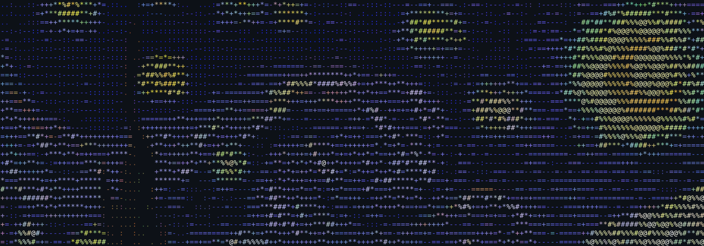

DATA ENGINEERING
01让公告，
成为可用的数据。
上市公司委托理财分析框架
把分散的上市公司公告连接成交易记录、机构关系与离线工作台。支持原文追溯、数据核验与导出。
16家公开样例公司
4,372样例交易记录
李硕仁 · 金融研究，落到数据与工具。
FIND THE SIGNAL.
BUILD SOMETHING REAL.

量化投资 / 另类数据 / 研究工具
从可追溯的数据，到可检验的实验，再到可使用的产品。
01 / SELECTED WORK
金融问题是起点。
数据、模型和产品，是回答。
DATA ENGINEERING
01上市公司委托理财分析框架
把分散的上市公司公告连接成交易记录、机构关系与离线工作台。支持原文追溯、数据核验与导出。
QUANTITATIVE RESEARCH
02AGENT WORKFLOW
03THE EXPLORATION CONTINUES
研究实验 / 工具 / 原型02 / RESEARCH NOTES
关注数据如何形成信号，
以及信号在什么条件下成立。
ALTERNATIVE DATA × ASSET PRICING
从企业招聘文本构建公司层面的 AI 暴露指标，研究其与 A 股资产定价的关系。把文本测度、公司匹配与面板构建放在同一条研究链上。
03 / THE PERSON BEHIND THE WORK
我是李硕仁，广东外语外贸大学金融工程本科在读。喜欢从现实里的金融问题出发，在研究与工程之间来回探索。
广东外语外贸大学 金融工程 · 2023—2027
EXPERIENCE / 实习经历
机构业务实习
贵宾事务实习
研究实习
运营实习
HAVE AN INTERESTING PROBLEM?
GITHUB ↗交流研究，也交流实现。
leo2974656036@foxmail.com